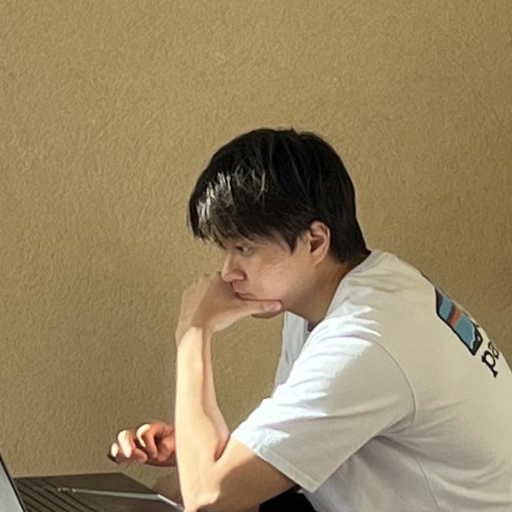

Hi! I am a research engineer at NCSOFT NLP Center. I studied at Seoul National University advised by Prof. Sang-goo Lee.
I have researched on natural language processing and deep learning, with a specific focus on NLG tasks such as data-to-text and abstractive summarization.
At present, my research expertise centers on the refinement of GPT models, with a focus on techniques like instruction fine-tuning and incorporating human feedback for enhanced learning.
For more details, please visit my Linked-in profile. Click here
NCSOFT NLP Center
- Team Leader of Application LM Team (2023.09-current)
- Team Leader of Generation Model Team (2022.06-2024.01)
- Research Engineer (2018.01-current)
Seoul National University
- M.S. Student in Computer Science and Engineering (2015.03-2017.02)
Stayes Inc.
- CTO, Co-founder (2014.02-2015.02)
Visionaries Inc.
- CTO, Co-founder (2013.05-2014.02)
Korea University
- B.S. Student in Computer Science and Engineering (2011.03-2015.02)
Sanghyuk Choi, Jeong-in Hwang, Hyungjong Noh, Yeonsoo Lee. May the Force Be with Your Copy Mechanism: Enhanced Supervised-Copy Method for Natural Language Generation. arXiv preprint, 2021.
Sanghyuk Choi, Taeuk Kim, Jinseok Seol, Sang-goo Lee. A Syllable-based Technique for Word Embeddings of Korean Words. SCLeM2017(The 1st Workshop on Subword and Character level models in NLP, EMNLP2017).
Sanghyuk Choi, Jinseok Seol, Sang-goo Lee. On Word Embedding Models and Parameters Optimized for Korean. The 28th Annual Conference on Human & Cognitive Language Technology.
Sanghyuk Choi, Sang-goo Lee. On the Implementation of an Input and Management System for Korean Minsokak(Folk Music) Fieldwork Material Database. Studies in Korean Music(Vol.59).
| Year | Award | Category |
|---|---|---|
| 2013 | 9th Prize | ACM-ICPC Asia Daejeon Regional |
| 2012 | 4th Prize | ACM-ICPC Asia Daejeon Regional |
| 2012 | 2nd Prize | Software Olympiad, Korea University |
Contributor of OpenNMT-py: Open-Source Neural Machine Translation and (Large) Language Models
Contributor of PEFT: State-of-the-art Parameter-Efficient Fine-Tuning (PEFT) methods, Huggingface
“The soul does not grow by addition but by subtraction.” — Meister Eckhart.